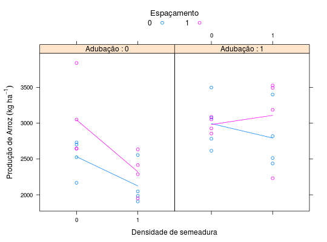

Dados de um experimento fatorial \(2^3\), com confundimento total da interação dupla. O ensaio foi conduzido em dois blocos ao acaso de tamanho 4 dentro de quatro repetições, em que cada uma continha um par de blocos (8 parcelas). Os fatores estudados foram: densidades de plantio de 50 e 90 sementes por metro, espaçamentos entre linhas de 35cm e 50cm e fator presença ou ausência de adubação nitrogenada em cobertura. A variável resposta é a produtividade de grãos, em kg ha\(^{-1}\).
Um data.frame com 32 observações e 4 variáveis, em que
reptblocodensiespacadubprodZIMMERMANN (2004), (Tabela 11.1, pág. 221)
ZimmermannTb11.7. Os ensaios
ZimmermannTb11.1 e ZimmermannTb11.7 possuem os
mesmos valores observados da resposta e fatores estudados, o que
muda é a estrutura de confundimento utilizada, com modificação do
tamanho dos blocos para que isso fosse ilustrado. O primeiro tem
2 blocos de tamanho 4 em cada repetição e o segundo tem 4 blocos
de tamanho 2. Essa modificação dos dados é artificial e foi feita
para fins didáticos. Não se deve alterar o delineamento de dados
reais para conduzir as análises.
library(lattice) data(ZimmermannTb11.1)#> Warning: data set ‘ZimmermannTb11.1’ not foundstr(ZimmermannTb11.1)#> 'data.frame': 32 obs. of 6 variables: #> $ rept : Factor w/ 4 levels "1","2","3","4": 1 2 3 4 1 2 3 4 1 2 ... #> $ bloco: Factor w/ 2 levels "1","2": 1 1 1 1 1 1 1 1 1 1 ... #> $ densi: int 1 0 0 1 0 1 0 0 0 1 ... #> $ espac: int 0 0 1 0 1 1 0 0 0 0 ... #> $ adub : int 1 0 1 1 1 0 0 0 0 1 ... #> $ prod : num 2820 2732 2927 3400 3053 ...xyplot(prod ~ factor(densi) | factor(adub), groups = espac, data = ZimmermannTb11.1, type = c("p", "a"), xlab = "Densidade de semeadura", ylab = expression ("Produção de Arroz"~(kg~ha^{-1})), auto.key = list(title = "Espaçamento", cex.title = 1.1, columns = 2), strip = strip.custom(strip.names = TRUE, var.name = "Adubação"))